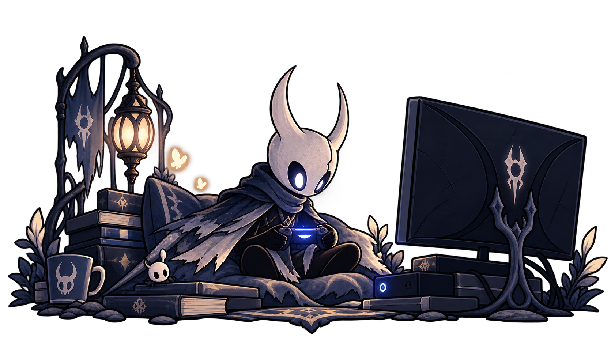
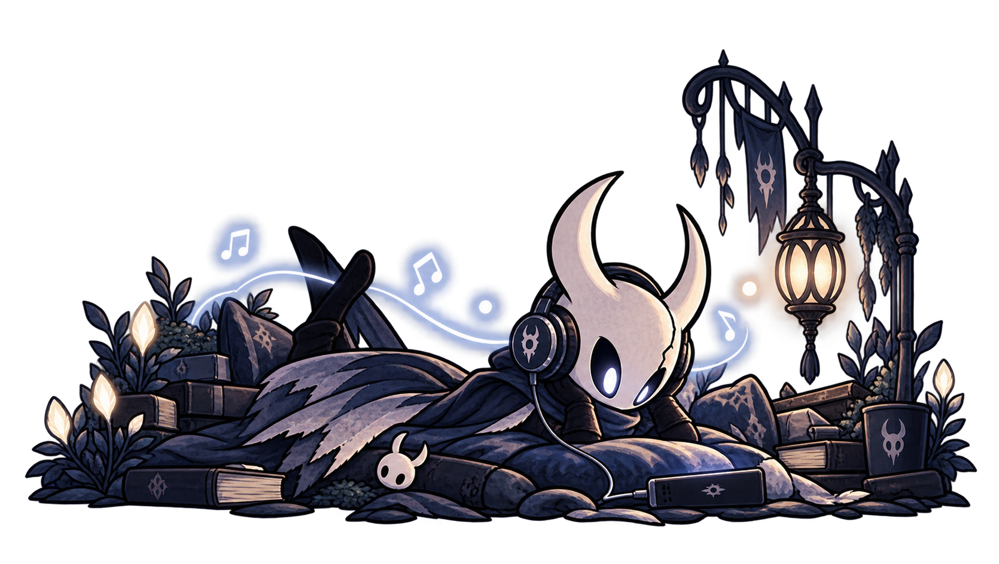
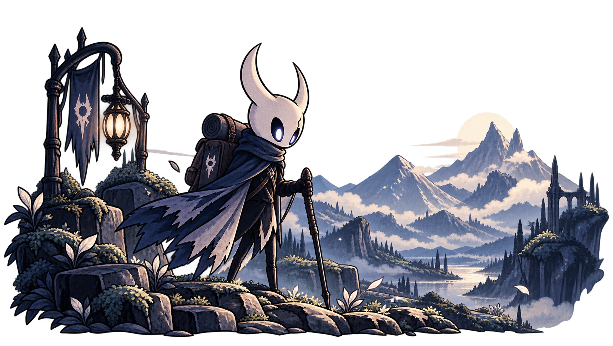
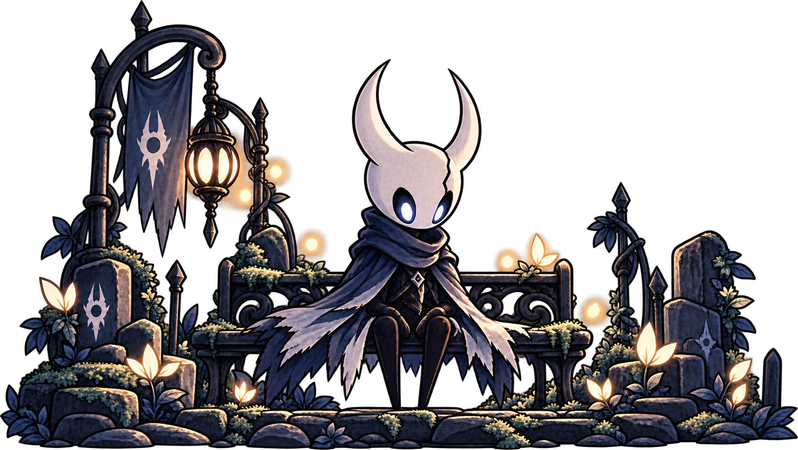

Jeux vidéo

Passionné de jeux vidéo depuis mon enfance, je suis un joueur attiré par des expériences fortes et mémorables.
Mes jeux favoris en carousel
Ce qui m'accompagne hors du développement

Passionné de jeux vidéo depuis mon enfance, je suis un joueur attiré par des expériences fortes et mémorables.
Mes jeux favoris en carousel

La musique électronique m'accompagne aussi bien dans mes moments de concentration que de détente.
Découvrir ma playlist ♪
Vivant autour des montagnes, j'ai progressivement pris goût à la randonnée et aux moments passés en pleine nature.
Quelques photos de mes randonnées

"Un moment pour souffler avant de reprendre le chemin."